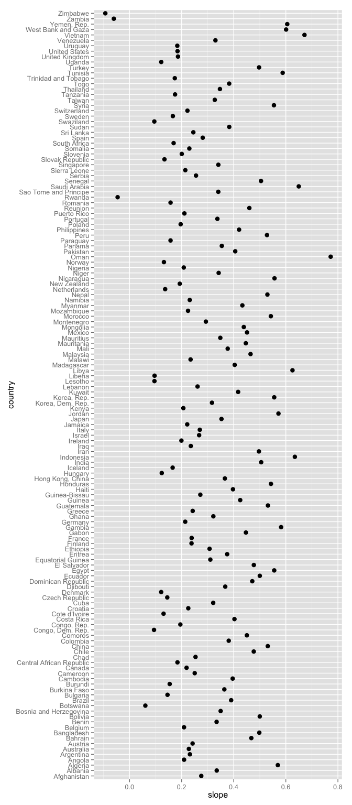
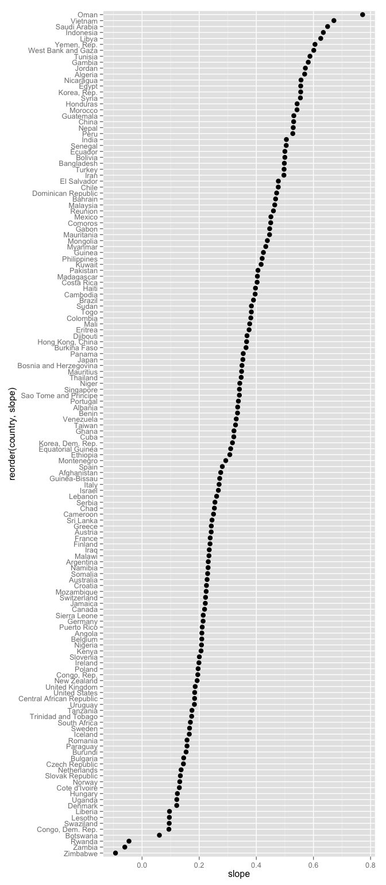
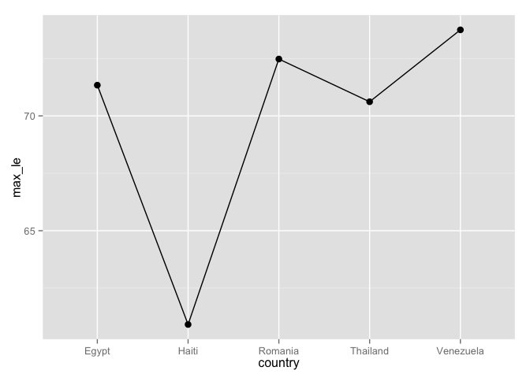
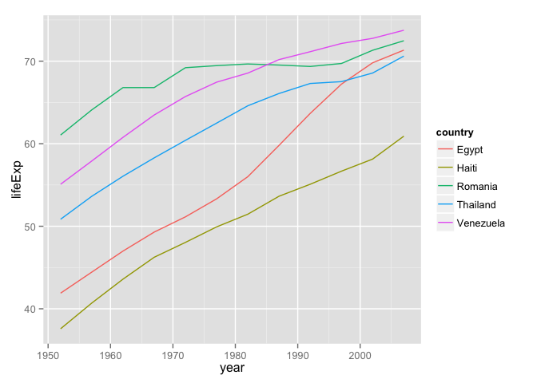
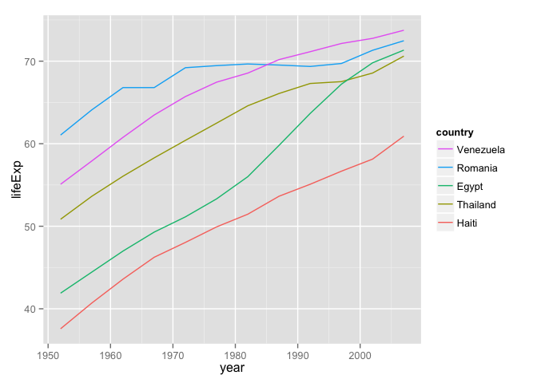
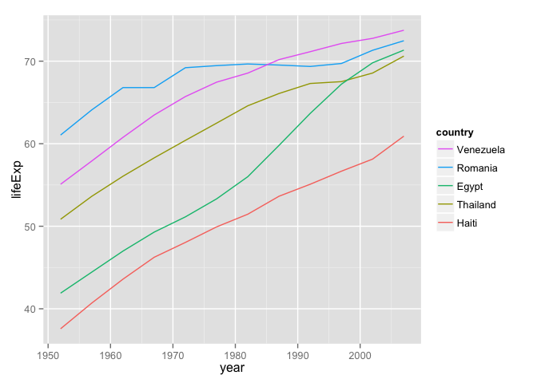
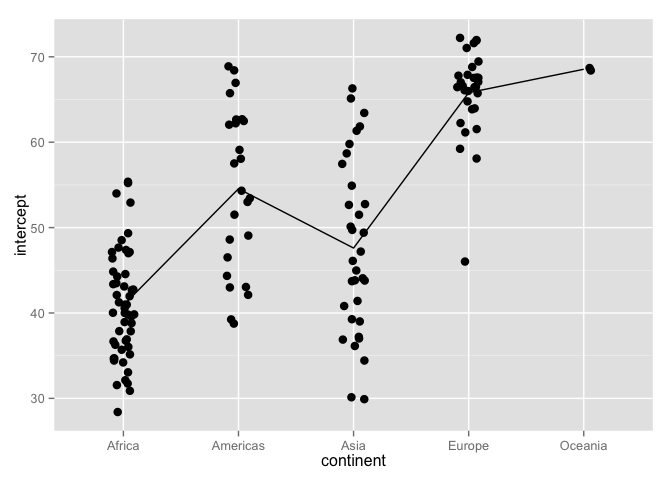
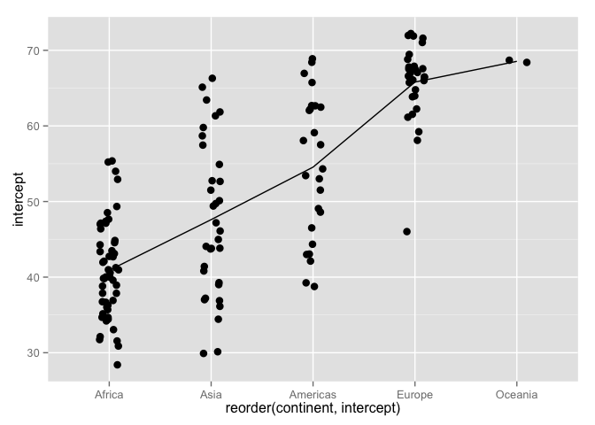

Be the boss of your factors
WARNING: STILL UNDER CONSTRUCTION. Here’s a link to some 2013 content which has been partially ported. So far, it has more big picture and this has more Gapminder examples. Sort of.
Load the Gapminder data
As usual, load the Gapminder excerpt. Load the plyr, dplyr (in that order), and ggplot2 packages.
library(plyr)
suppressPackageStartupMessages(library(dplyr))
library(ggplot2)
gDat <- read.delim("gapminderDataFiveYear.txt")
str(gDat)
## 'data.frame': 1704 obs. of 6 variables:
## $ country : Factor w/ 142 levels "Afghanistan",..: 1 1 1 1 1 1 1 1 1 1 ...
## $ year : int 1952 1957 1962 1967 1972 1977 1982 1987 1992 1997 ...
## $ pop : num 8425333 9240934 10267083 11537966 13079460 ...
## $ continent: Factor w/ 5 levels "Africa","Americas",..: 3 3 3 3 3 3 3 3 3 3 ...
## $ lifeExp : num 28.8 30.3 32 34 36.1 ...
## $ gdpPercap: num 779 821 853 836 740 ...
## or do this if the file isn't lying around already
## gd_url <- "http://tiny.cc/gapminder"
## gDat <- read.delim(gd_url)Model life expectancy as a function of year
For each country, retain estimated intercept and slope from a linear fit – regressing life expectancy on year. I include country AND continent in the factors on which to split, so that the continent factor appears in my result.
j_coefs <- ddply(gDat, ~ country + continent, function(dat, offset = 1952) {
the_fit <- lm(lifeExp ~ I(year - offset), dat)
setNames(coef(the_fit), c("intercept", "slope"))
})Get to know the country factor
str(j_coefs)
## 'data.frame': 142 obs. of 4 variables:
## $ country : Factor w/ 142 levels "Afghanistan",..: 1 2 3 4 5 6 7 8 9 10 ...
## $ continent: Factor w/ 5 levels "Africa","Americas",..: 3 4 1 1 2 5 4 3 3 4 ...
## $ intercept: num 29.9 59.2 43.4 32.1 62.7 ...
## $ slope : num 0.275 0.335 0.569 0.209 0.232 ...
levels(j_coefs$country)
## [1] "Afghanistan" "Albania"
## [3] "Algeria" "Angola"
## [5] "Argentina" "Australia"
## [7] "Austria" "Bahrain"
## [9] "Bangladesh" "Belgium"
## [11] "Benin" "Bolivia"
## [13] "Bosnia and Herzegovina" "Botswana"
## [15] "Brazil" "Bulgaria"
## [17] "Burkina Faso" "Burundi"
## [19] "Cambodia" "Cameroon"
## [21] "Canada" "Central African Republic"
## [23] "Chad" "Chile"
## [25] "China" "Colombia"
## [27] "Comoros" "Congo, Dem. Rep."
## [29] "Congo, Rep." "Costa Rica"
## [31] "Cote d'Ivoire" "Croatia"
## [33] "Cuba" "Czech Republic"
## [35] "Denmark" "Djibouti"
## [37] "Dominican Republic" "Ecuador"
## [39] "Egypt" "El Salvador"
## [41] "Equatorial Guinea" "Eritrea"
## [43] "Ethiopia" "Finland"
## [45] "France" "Gabon"
## [47] "Gambia" "Germany"
## [49] "Ghana" "Greece"
## [51] "Guatemala" "Guinea"
## [53] "Guinea-Bissau" "Haiti"
## [55] "Honduras" "Hong Kong, China"
## [57] "Hungary" "Iceland"
## [59] "India" "Indonesia"
## [61] "Iran" "Iraq"
## [63] "Ireland" "Israel"
## [65] "Italy" "Jamaica"
## [67] "Japan" "Jordan"
## [69] "Kenya" "Korea, Dem. Rep."
## [71] "Korea, Rep." "Kuwait"
## [73] "Lebanon" "Lesotho"
## [75] "Liberia" "Libya"
## [77] "Madagascar" "Malawi"
## [79] "Malaysia" "Mali"
## [81] "Mauritania" "Mauritius"
## [83] "Mexico" "Mongolia"
## [85] "Montenegro" "Morocco"
## [87] "Mozambique" "Myanmar"
## [89] "Namibia" "Nepal"
## [91] "Netherlands" "New Zealand"
## [93] "Nicaragua" "Niger"
## [95] "Nigeria" "Norway"
## [97] "Oman" "Pakistan"
## [99] "Panama" "Paraguay"
## [101] "Peru" "Philippines"
## [103] "Poland" "Portugal"
## [105] "Puerto Rico" "Reunion"
## [107] "Romania" "Rwanda"
## [109] "Sao Tome and Principe" "Saudi Arabia"
## [111] "Senegal" "Serbia"
## [113] "Sierra Leone" "Singapore"
## [115] "Slovak Republic" "Slovenia"
## [117] "Somalia" "South Africa"
## [119] "Spain" "Sri Lanka"
## [121] "Sudan" "Swaziland"
## [123] "Sweden" "Switzerland"
## [125] "Syria" "Taiwan"
## [127] "Tanzania" "Thailand"
## [129] "Togo" "Trinidad and Tobago"
## [131] "Tunisia" "Turkey"
## [133] "Uganda" "United Kingdom"
## [135] "United States" "Uruguay"
## [137] "Venezuela" "Vietnam"
## [139] "West Bank and Gaza" "Yemen, Rep."
## [141] "Zambia" "Zimbabwe"
head(j_coefs$country)
## [1] Afghanistan Albania Algeria Angola Argentina Australia
## 142 Levels: Afghanistan Albania Algeria Angola Argentina ... ZimbabweThe levels are in alphabetical order. Why? Because. Just because. Do you have a better idea? THEN STEP UP AND DO SOMETHING ABOUT IT.
Why the order of factor levels matters
ggplot(j_coefs, aes(x = slope, y = country)) + geom_point(size = 3)
ggplot(j_coefs, aes(x = slope, y = reorder(country, slope))) +
geom_point(size = 3)
Which figure do you find easier to navigate? Which is more interesting? The unsorted, i.e. alphabetical, is an example of visual data puke, because there is no effort to help the viewer learn anything from the plot, even though it is really easy to do so. At the very least, always consider sorting your factor levels in some principled way.
The same point generally applies to tables as well.
Exercise (will probably make its way into homework): Consider post_arrange, post_reorder, and post_both as defined below. State how the objects differ and discuss the differences in terms of utility within an exploratory analysis. If I swapped out arrange(country) for arrange(slope), would we get the same result? Do you have any preference for one arrange statement over the other?
post_arrange <- j_coefs %>% arrange(slope)
post_reorder <- j_coefs %>%
mutate(country = reorder(country, slope))
post_both <- j_coefs %>%
mutate(country = reorder(country, slope)) %>%
arrange(country)droplevels() to drop unused factor levels
Many demos will be clearer if we create a smaller dataset with just a few countries.
Let’s look at these five countries: Egypt, Haiti, Romania, Thailand, Venezuela.
h_countries <- c("Egypt", "Haiti", "Romania", "Thailand", "Venezuela")
hDat <- gDat %>%
filter(country %in% h_countries)
hDat %>% str
## 'data.frame': 60 obs. of 6 variables:
## $ country : Factor w/ 142 levels "Afghanistan",..: 39 39 39 39 39 39 39 39 39 39 ...
## $ year : int 1952 1957 1962 1967 1972 1977 1982 1987 1992 1997 ...
## $ pop : num 22223309 25009741 28173309 31681188 34807417 ...
## $ continent: Factor w/ 5 levels "Africa","Americas",..: 1 1 1 1 1 1 1 1 1 1 ...
## $ lifeExp : num 41.9 44.4 47 49.3 51.1 ...
## $ gdpPercap: num 1419 1459 1693 1815 2024 ...Look at the country factor. Look at it hard.
#table(hDat$country)
#levels(hDat$country)
nlevels(hDat$country)
## [1] 142Even though hDat contains data for only 5 countries, the other 137 countries remain as possible levels of the country factor. Sometimes this is exactly what you want but sometimes it’s not.
When you want to drop unused factor levels, use droplevels().
iDat <- hDat %>% droplevels ## of droplevels(hDat)
iDat %>% str
## 'data.frame': 60 obs. of 6 variables:
## $ country : Factor w/ 5 levels "Egypt","Haiti",..: 1 1 1 1 1 1 1 1 1 1 ...
## $ year : int 1952 1957 1962 1967 1972 1977 1982 1987 1992 1997 ...
## $ pop : num 22223309 25009741 28173309 31681188 34807417 ...
## $ continent: Factor w/ 4 levels "Africa","Americas",..: 1 1 1 1 1 1 1 1 1 1 ...
## $ lifeExp : num 41.9 44.4 47 49.3 51.1 ...
## $ gdpPercap: num 1419 1459 1693 1815 2024 ...
table(iDat$country)
##
## Egypt Haiti Romania Thailand Venezuela
## 12 12 12 12 12
levels(iDat$country)
## [1] "Egypt" "Haiti" "Romania" "Thailand" "Venezuela"
nlevels(iDat$country)
## [1] 5reorder() to reorder factor levels
Now that we have a more manageable set of 5 countries, let’s compute their max life expectancies, view them, and view life expectancy vs. year.
i_le_max <- iDat %>%
group_by(country) %>%
summarize(max_le = max(lifeExp))
i_le_max
## Source: local data frame [5 x 2]
##
## country max_le
## 1 Egypt 71.338
## 2 Haiti 60.916
## 3 Romania 72.476
## 4 Thailand 70.616
## 5 Venezuela 73.747ggplot(i_le_max, aes(x = country, y = max_le, group = 1)) +
geom_path() + geom_point(size = 3)
ggplot(iDat, aes(x = year, y = lifeExp, group = country)) +
geom_line(aes(color = country))
Here’s a plot of the max life expectancies and a spaghetti plot of life expectancy over time. Notice how the first plot jumps around? Notice how the legend of the second plot is completely out of order with the data?
Use the function reorder() to change the order of factor levels. Read its documentation.
reorder(your_factor, your_quant_var, your_summarization_function)Let’s reorder the country factor logically, in this case by maximum life expectancy. Even though i_le_max already holds these numbers, I’m going to enact the reordering with the “raw” data to illustrate more about the reorder() function.
jDat <- iDat %>%
mutate(country = reorder(country, lifeExp, max))
data.frame(before = levels(iDat$country), after = levels(jDat$country))
## before after
## 1 Egypt Haiti
## 2 Haiti Thailand
## 3 Romania Egypt
## 4 Thailand Romania
## 5 Venezuela Venezuela
j_le_max <- i_le_max %>%
mutate(country = reorder(country, max_le))
j_le_max <- i_le_max %>%
mutate(country = factor(country, levels = levels(jDat$country)))Let’s revisit the two figures to see how much more natural they are.
ggplot(j_le_max, aes(x = country, y = max_le, group = 1)) +
geom_line() + geom_point(size = 3)
ggplot(jDat, aes(x = year, y = lifeExp)) +
geom_line(aes(color = country)) +
guides(color = guide_legend(reverse = TRUE)) 

Conclusion: Use reorder() to reorder a factor according to a quantitative variable. A simple call like this:
reorder(your_factor, your_quant_var)implies that the summarization function will default to mean(). If that’s not what you want, specify your own summarization function. It could be built-in, such as max(), or could be written by you on-the-fly or in advance.
You can do this and alter your actual data (or a new copy thereof). Or you can do this reordering on-the-fly, i.e. in an actual plotting or tabulation call, leaving the underlying data untouched.
reorder() exercise
Reorder the continent factor, according to the estimated intercepts.
To review, here’s where to pick up the story:
j_coefs <- ddply(gDat, ~ country + continent, function(dat, offset = 1952) {
the_fit <- lm(lifeExp ~ I(year - offset), dat)
setNames(coef(the_fit), c("intercept", "slope"))
})
head(j_coefs)
## country continent intercept slope
## 1 Afghanistan Asia 29.90729 0.2753287
## 2 Albania Europe 59.22913 0.3346832
## 3 Algeria Africa 43.37497 0.5692797
## 4 Angola Africa 32.12665 0.2093399
## 5 Argentina Americas 62.68844 0.2317084
## 6 Australia Oceania 68.40051 0.2277238The figure on the left gives a stripplot of estimate intecepts, by continent, with continent in alpabetical order. The line connects continent-specific averages of the intercepts (approx. equal to life expectancy in 1952). The figure on the right gives same plot after the continents have been reordered by average estimated intercept.

Write the reorder() statement to do this.
Revaluing factor levels
What if you want to recode factor levels? I usually use the revalue() function from plyr. In the past I have also used the recode() function from the car package.
k_countries <- c("Australia", "Korea, Dem. Rep.", "Korea, Rep.")
kDat <- gDat %>%
filter(country %in% k_countries & year > 2000) %>%
droplevels
kDat
## country year pop continent lifeExp gdpPercap
## 1 Australia 2002 19546792 Oceania 80.370 30687.755
## 2 Australia 2007 20434176 Oceania 81.235 34435.367
## 3 Korea, Dem. Rep. 2002 22215365 Asia 66.662 1646.758
## 4 Korea, Dem. Rep. 2007 23301725 Asia 67.297 1593.065
## 5 Korea, Rep. 2002 47969150 Asia 77.045 19233.988
## 6 Korea, Rep. 2007 49044790 Asia 78.623 23348.140
levels(kDat$country)
## [1] "Australia" "Korea, Dem. Rep." "Korea, Rep."
kDat <- kDat %>%
mutate(new_country = revalue(country,
c("Australia" = "Oz",
"Korea, Dem. Rep." = "North Korea",
"Korea, Rep." = "South Korea")))
data.frame(levels(kDat$country), levels(kDat$new_country))
## levels.kDat.country. levels.kDat.new_country.
## 1 Australia Oz
## 2 Korea, Dem. Rep. North Korea
## 3 Korea, Rep. South Korea
kDat
## country year pop continent lifeExp gdpPercap new_country
## 1 Australia 2002 19546792 Oceania 80.370 30687.755 Oz
## 2 Australia 2007 20434176 Oceania 81.235 34435.367 Oz
## 3 Korea, Dem. Rep. 2002 22215365 Asia 66.662 1646.758 North Korea
## 4 Korea, Dem. Rep. 2007 23301725 Asia 67.297 1593.065 North Korea
## 5 Korea, Rep. 2002 47969150 Asia 77.045 19233.988 South Korea
## 6 Korea, Rep. 2007 49044790 Asia 78.623 23348.140 South KoreaGrow a factor object
Try to avoid this. If you must rbind()ing data.frames works much better than c()ing vectors.
usa <- gDat %>%
filter(country == "United States" & year > 2000) %>%
droplevels
mex <- gDat %>%
filter(country == "Mexico" & year > 2000) %>%
droplevels
str(usa)
## 'data.frame': 2 obs. of 6 variables:
## $ country : Factor w/ 1 level "United States": 1 1
## $ year : int 2002 2007
## $ pop : num 2.88e+08 3.01e+08
## $ continent: Factor w/ 1 level "Americas": 1 1
## $ lifeExp : num 77.3 78.2
## $ gdpPercap: num 39097 42952
str(mex)
## 'data.frame': 2 obs. of 6 variables:
## $ country : Factor w/ 1 level "Mexico": 1 1
## $ year : int 2002 2007
## $ pop : num 1.02e+08 1.09e+08
## $ continent: Factor w/ 1 level "Americas": 1 1
## $ lifeExp : num 74.9 76.2
## $ gdpPercap: num 10742 11978
usa_mex <- rbind(usa, mex)
str(usa_mex)
## 'data.frame': 4 obs. of 6 variables:
## $ country : Factor w/ 2 levels "United States",..: 1 1 2 2
## $ year : int 2002 2007 2002 2007
## $ pop : num 2.88e+08 3.01e+08 1.02e+08 1.09e+08
## $ continent: Factor w/ 1 level "Americas": 1 1 1 1
## $ lifeExp : num 77.3 78.2 74.9 76.2
## $ gdpPercap: num 39097 42952 10742 11978
(oops <- c(usa$country, mex$country))
## [1] 1 1 1 1
(yeah <- factor(c(levels(usa$country)[usa$country],
levels(mex$country)[mex$country])))
## [1] United States United States Mexico Mexico
## Levels: Mexico United StatesIf you really want to catenate factors with different levels, you must first convert to their levels as character data, combine, then re-convert to factor.